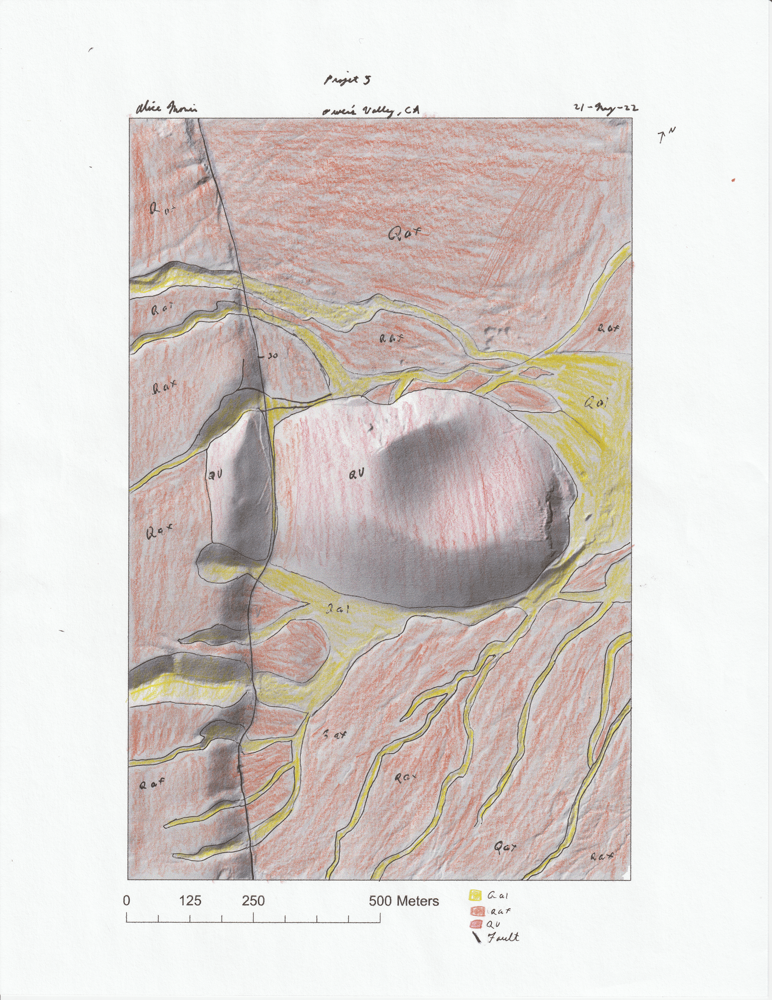

Alice Morris Portfolio
Interactive Maps

Static Maps

Hand drawn geologic map of the Anti-Atlas in Morocco

Hand drawn geologic map of the Keweenaw Peninsula in Michigan

Hand drawn seismic interpretation from the Mississippi Delta to the Yucatán Peninsula

Hand drawn interpretational map of the gross depositional environment of the Gulf of Mexico

Hand drawn geologic map of Owens Valley in California

Computer generated geologic map of the Black Hills in Western South Dakota – Eastern Wyoming
Research